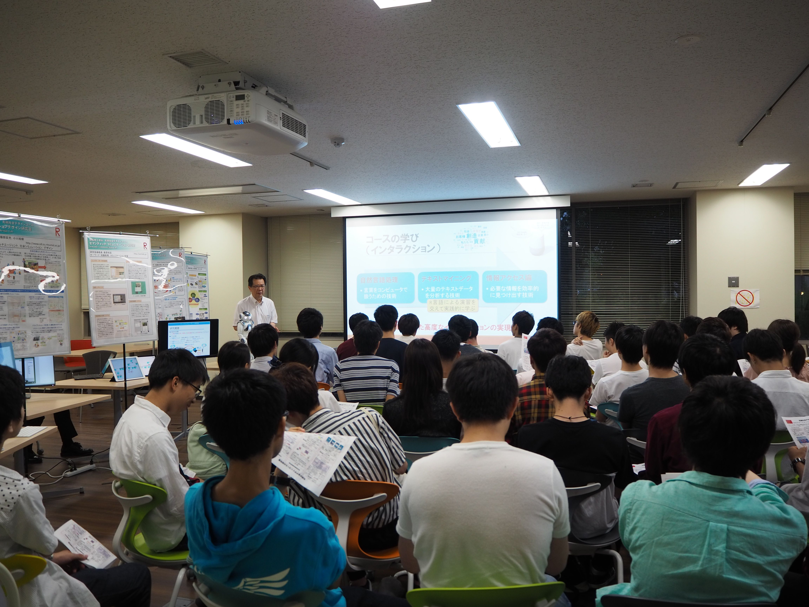
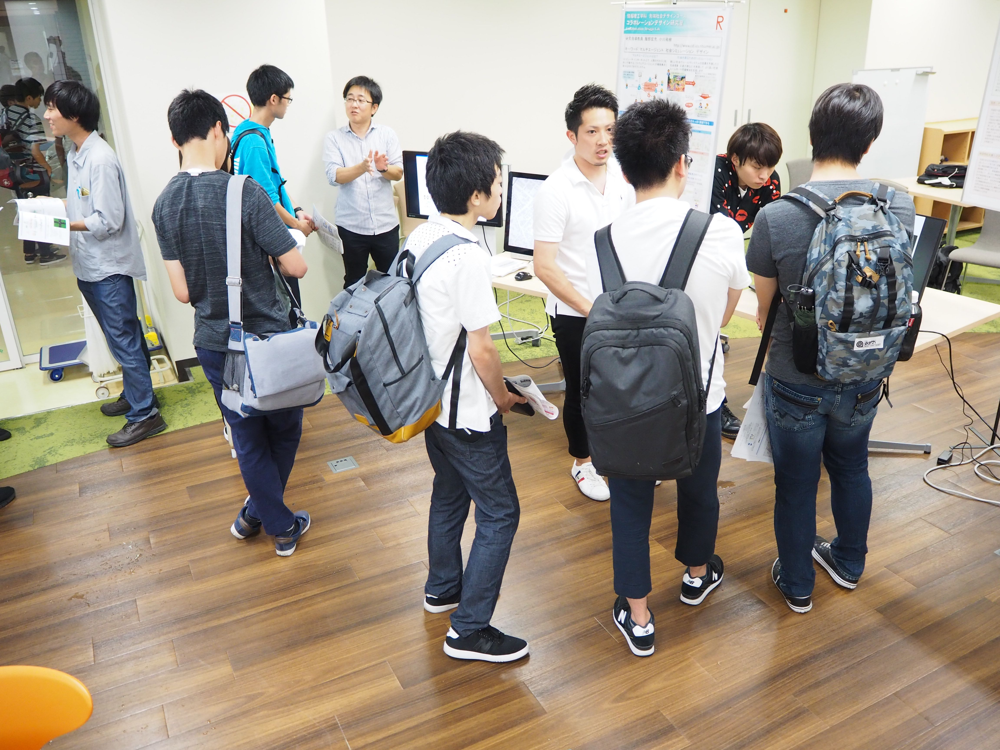
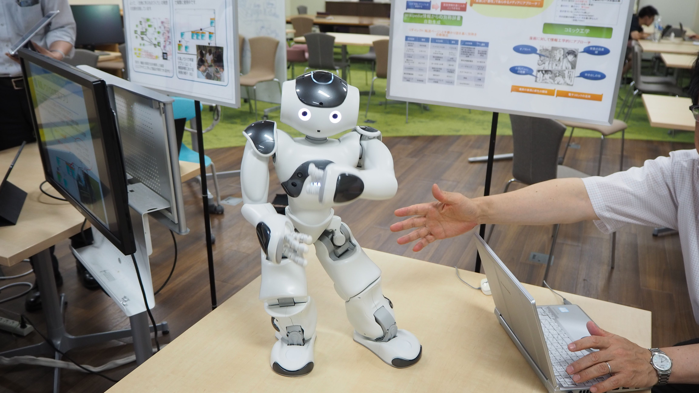
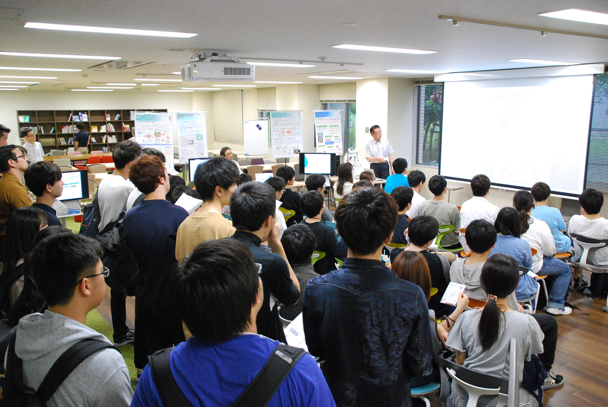
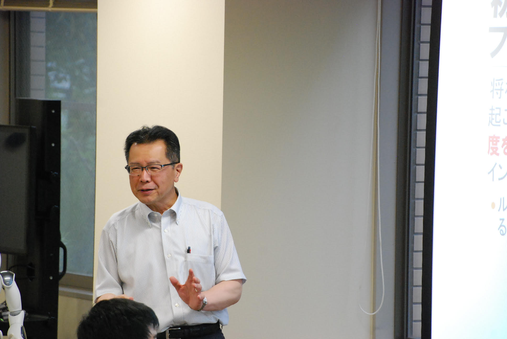
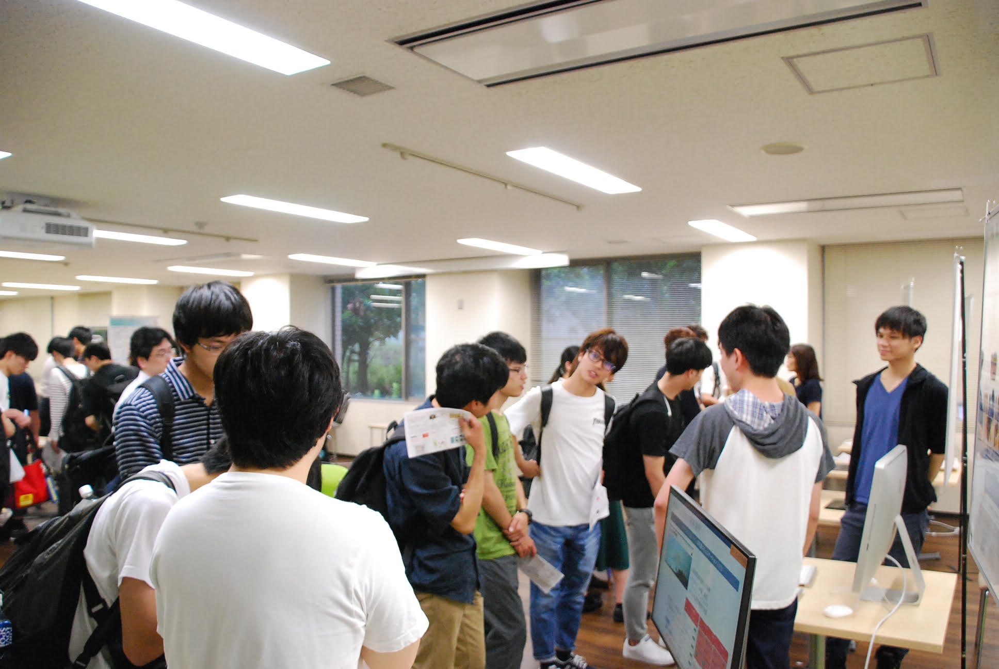
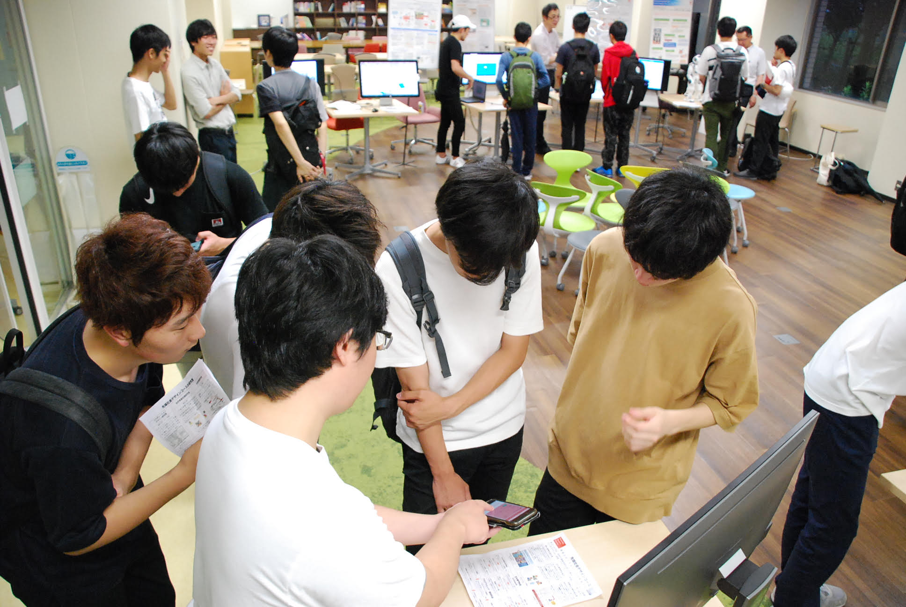

# コース配属情報
先端社会デザインコース(FSDコース)への配属を検討している人向けの情報を掲載します．2020年度は２回のコース説明会，３回の最終相談会を設けます．コース配属に関する質問や，直接関係しないが聞いてみたいことをこちらのGoogle Form (opens new window)で随時受け付けます．
2020年度1回生向けコース紹介パンフレットは こちら (opens new window)※要RainbowID
2020年度コース配属全体説明会で発表した資料は こちら (opens new window)※要RainbowID
# コース説明会
# 内容
- 教員、先輩学生によるコースの特徴紹介
- 各研究室の研究紹介
- デモ
- Q&A
- 雑談など
※出入り自由です!!気軽にお越しください
質問はこちらのGoogle Form (opens new window)で随時受け付けます．
# 第1回 2020年6月26日（金）
- 日時: 2020年6月26日（金）18:00-19:30
- 場所: Zoom アドレスはこちら(要RainbowID) (opens new window)
# 第2回 2020年6月29日（月）
- 日時: 2020年6月29日（月）18:00-19:30
- 場所: Zoom アドレスはこちら(要RainbowID) (opens new window)
# 最終相談会
# 内容
- これまでに得られた質問に対する回答の紹介
- 教員による個別相談対応
※出入り自由です!!気軽にお越しください
質問はこちらのGoogle Form (opens new window)で随時受け付けます．
# 第1回 2020年7月1日（水）
- 日時: 2020年7月1日（水）18:00-19:30
- 場所: Zoom アドレスはこちら(要RainbowID) (opens new window)
# 第2回 2020年7月3日（金）
- 日時: 2020年7月3日（金）18:00-19:30
- 場所: Zoom アドレスはこちら(要RainbowID) (opens new window)
# 第3回 2020年7月6日（月）
- 日時: 2020年7月6日（月）18:00-19:30
- 場所: Zoom アドレスはこちら(要RainbowID) (opens new window)
# コース配属希望の申請について
先端社会デザインコースへの配属を希望するには，1回生の7月に申請する必要があります．
# 申請期間
申請期間には，配属申請期間と申請修正期間があります．
# 配属申請期間
- 2020年7月7日（火）10:00-14日（火）17:00
# 申請修正期間
- 2020年7月15日（水）10:00-21日（火）17:00
# 申請方法
申請期間中に，manaba+R (opens new window)の情報理工学部生ページの「コース配属（2017年度以降入学者）/Course Allocation (For students who enrolled in or after AY2017)」にて申請フォームが公開される予定です．その申請フォームから希望コースを選択します．
# コース演習科目の紹介
先端社会デザインコース（FSDコース）の演習科目の内容をわかりやすく紹介した動画を紹介します． ぜひご覧ください！
# 2回生向け演習
# テキストマイニング（ワードクラウド作成）
# 実践プログラミング演習（お絵かきプログラム）
# 先端社会デザイン創成1（Webページ作成）
# 3回生向け演習
# 先端社会デザイン創成2（自動要約・情報検索）
# 昨年度のコース説明会の様子
# 第1回
  # 第2回
   # Q&A
主な質問と回答をまとめました。参考にしてください。
# どういうことを学べるコースですか？
先端社会デザインコース（FSDコース）は、大量のアンケートデータを分析し、顧客のニーズをつかむ技術や、AIスピーカやチャットボットなど、人間と機械の対話を実現する技術、人の認知を考慮して使いやすいものを設計する技術や、色々なアイデアが次々と出るような議論の場をデザインする技術などが学べます。
# 他コースに比べて、どういう特徴があるのですか？
他コースとの大きな違いは、人の認知を考慮して使いやすいものを設計する技術など、認知工学について学べる点です。また、AIやビッグデータなどは他コースでも学べる技術や知見も学べますが、先端社会デザインコース（FSDコース）では基礎的というよりは応用に近い面から学んでいくようになっています。
# プログラミング言語は何を学びますか？
先端社会デザインコース（FSDコース）で学ぶ言語はPython、Java、Cの2つです。1年生後期、2年生前期でPythonの基礎から応用までを学びます。2年生後期にJavaとCを学びます。
# なぜPythonを学ぶのですか？
Pythonは世界中で多くの人が使っているデータサイエンスの今一番ポピュラーな言語です。Pythonを使える人が求められている現状と、多くの参考となるプログラムがPythonで書かれており、学んでおく必要があります。
# プログラミングに苦手意識があり、ついていくことができるか不安なのですが…
プログラミングについては、先端社会デザインコース（FSDコース）は基礎からゆっくり丁寧に教えてくれるので、ちゃんとついていけるようになっています。講義時間外にもTAやESがプログラミングについて教えてくれるフォローアップがあるなど、プログラミングに関するサポートが充実しています。
# 他のコースも含めて全体的に、各研究室の研究内容がわからないです
研究内容についてはわかりやすいキーワードが研究室リストに掲載されています。また、1年生後期の先端社会デザイン概論で各研究室の研究内容紹介の時間があり、そこで知ることができます。
# 1回生前期でコースを決めるのは難しいのですが、何を考えればよいですか？
特に強くやってみたいことがない場合は、興味を持てそうなキーワードや分野を探してみてください。例えば、先端社会デザインコース（FSDコース）は研究分野が広く、応用的な研究が多いため、皆さんの身近なところで使われている技術が多数あります。また数学を多用する理系のイメージというよりは、いろいろなことを考えてアイデアを発想し、実現するなど文系のイメージもあります。
# プログラミング以外にどのような講義がありますか？
コース固有の科目としては、1年生の後期に先端社会デザイン概論があります。各研究室の研究紹介を聞き、各研究について自分たちで調べて発表をします。2年生の前期には先端社会デザイン創成1があります。インタラクティブなWebページ作品を製作し、発表をします。皆で作って発表をする形の創成・演習科目が充実しています。
# 自宅でプログラミングをする環境が整えられず困っているのですが、どうしたらいいですか？
完全にサポートすることは困難ですが、Pythonに関してはプログラミング演習1のフォローアップで質問してもらえれば、可能な範囲で回答をします。